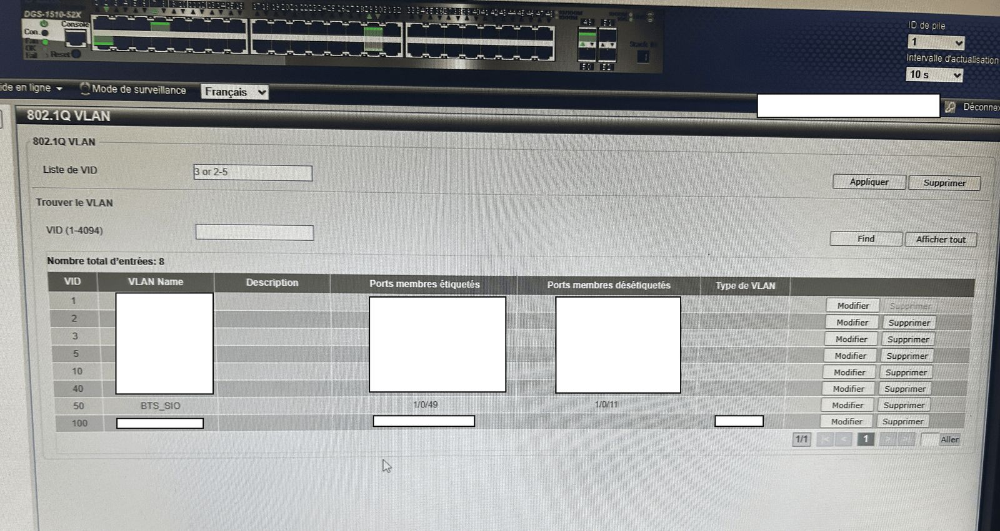

Mission 01
Création d'un VLAN dédié au BTS SIO
Bloc 2
Les postes de la salle du BTS SIO étaient sur le même réseau que le reste du campus. Or, les étudiants y font des travaux pratiques réseau qui peuvent perturber les autres services. L'objectif était de les isoler dans un VLAN qui leur est propre.
VLAN 802.1QSwitch D-Link DGS-1510DHCPPare-feu
Voir la captureMasquer la capture

Voir les détailsMasquer les détails
Environnement technique
- Switch D-Link DGS-1510-52X, configuré par son interface web
- Serveur DHCP
- Pare-feu de l'école
Étapes de réalisation
- Analyse : repérage des prises et des ports de switch utilisés par la salle du BTS SIO.
- Conception : choix du numéro de VLAN et de la plage d'adresses IP, validé avec mon tuteur.
- Configuration du switch : création du VLAN 50 nommé « BTS_SIO » (norme 802.1Q), port 1/0/11 en membre non étiqueté (accès) et port 1/0/49 en membre étiqueté (lien trunk).
- Adressage : création d'une étendue DHCP pour ce VLAN.
- Filtrage : règles sur le pare-feu pour autoriser Internet et bloquer l'accès aux réseaux administratifs.
- Tests et documentation : vérification de l'adresse reçue par chaque poste et mise à jour du schéma réseau.
Difficulté rencontrée
Certains postes gardaient leur ancienne adresse IP après le changement.Ils avaient encore un bail DHCP de l'ancien réseau. J'ai forcé le renouvellement avec les commandes ipconfig /release puis ipconfig /renew.
Compétences mobilisées
Bloc 2 · Administration des systèmes et des réseaux
- Concevoir une solution d'infrastructure réseau
- Installer, tester et déployer une solution d'infrastructure réseau